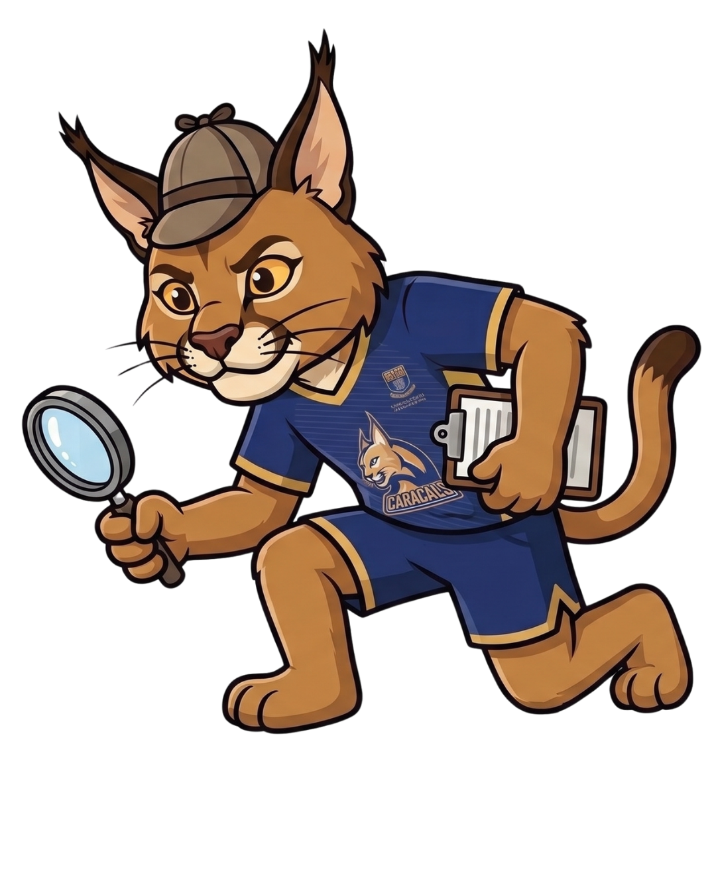

Only logged-in university students can post reports or contact item owners. Zero outside spammers or scammers allowed.
Always meet up in well-lit, high-traffic campus locations like the Library , Student Centre, or Campus Security.
Keep personal info safe! Never upload images showing full student ID numbers, phone numbers, or residential addresses